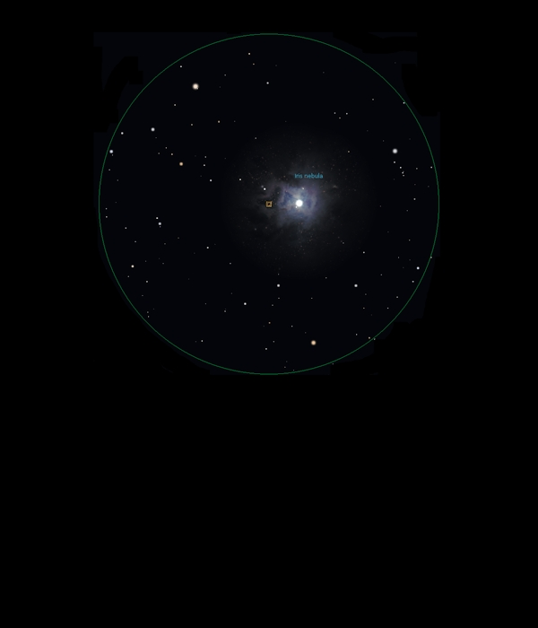

NGC 7023
Reflection
Nebula In Cepheus
NGC 7023
Mag 6.8
The Iris Nebula, Caldwell 4
02/02/16
A strange dark hole in the sky surrounding V0380 Cep, HIP
103763 at Mag 7.30
The star appears yellow/white and in 25mm appears to sit in
a dark void
This is even more pronounced in 12mm with UHC filter
However, there is a hint of the nebulosity surrounding V0380
Cep which is the Iris Nebula